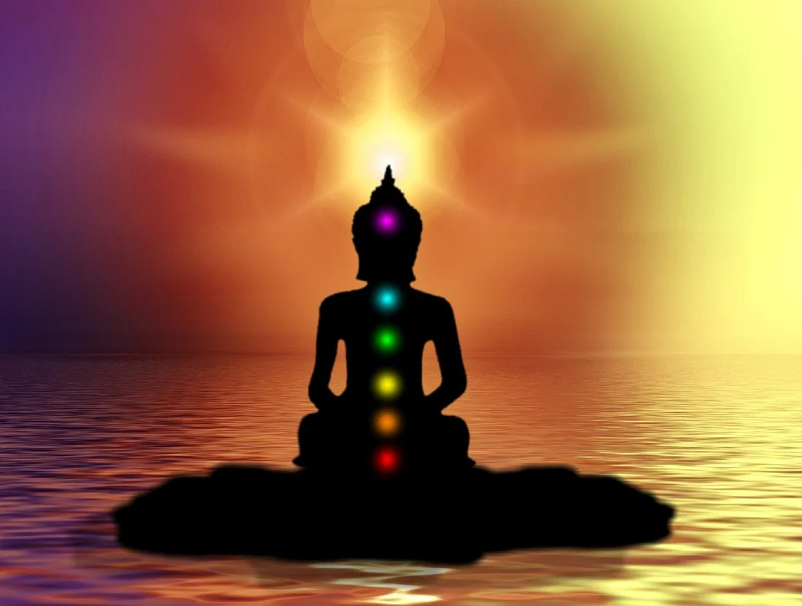
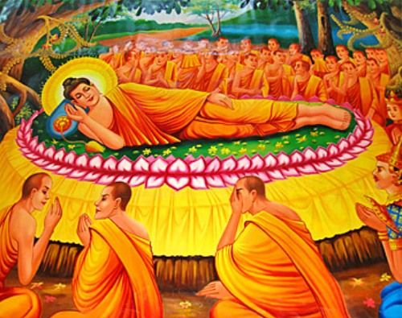

I Buddhismen er Buddha et sanskritisk ord og betyr "Oppvåknet". Tittelen Buddha er for de som er "åndelig våken" og har oppnåd Nirvana. Siddaharta Gautama ver en prins i india og grunnleggeren av Buddhismen. Siddaharta har fått tittelen Buddha når han rømte fra slottet og mediterte under et tre. Under meditasjonen oppnådde han Nirvana
Nirvana er en tilstand der du er fri fra gjenfødelse. Du oppnår Nirvana med å ikke ville ha mer enn du har. Det er en tilstand av ro, fred og harmoni. Nirvana på sanskrift betyr "Dø Ut" eller "Slukke". Nirvana er ikke likt som Himmelen fra Kristendommen. Nirvana er en fysiske død.
"Dharma er et sentralt begrep i hinduismen og buddhismen. I buddhismen er dharma Buddhas lære. I hinduismen er begrepet mer mangfoldig. Dharma betyr her det rette, moral, lov eller verdensorden." I buddhismen er dharma Buddha's LæreSnl.no
Pari-nirvana er et begrep som representerer Nirvana etter døden. Når Buddha døde hadde han oppnåd Nirvana og hans død kalles Pari-nirvana.
"I enkelte mahāyāna-skrifter, deriblant Mahāyāna mahāparanirvāna-sutraen, er parinirvāṇa beskrevet som området for Buddhas evige sanne atman eller selv." Wikipedia
Buddhismen har 3 hovedretninger Theravada, Mahayana, Vadsjrayana.
"De eldstes lære"
Theravada er en retning iinnen buddhismen som hevder å ha bevart Buddhas lære uten endringer. Theravada er den største retningen I Myanmar, Thailand, Laos og Kambodsja.
Mahayana er tanken der alle mennesker kan oppnå nirvana. Forutsetningen er en fastbeslutning om å strebe mot fullkommenhet, om nødvendig gjennom mange liv.
Vadsjrayana er en videreutvikling av mahayana, og oppfattes noen ganger som en skole under mahayana. Retningen oppsto i India omkring år 500, og kom til Tibet på 700-tallet. Tibetansk buddhisme er den mest kjente og utbredte formen for vadsjrayana i dag.